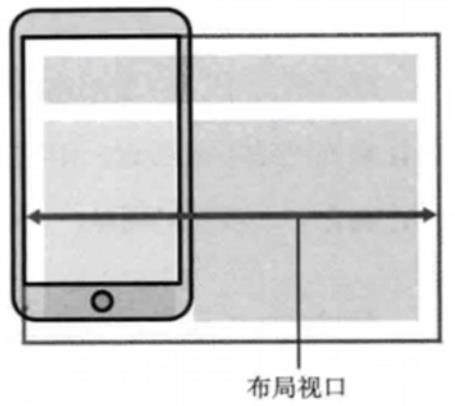
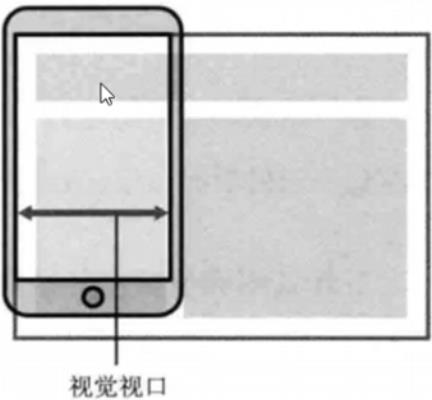
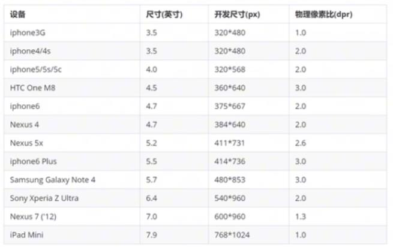
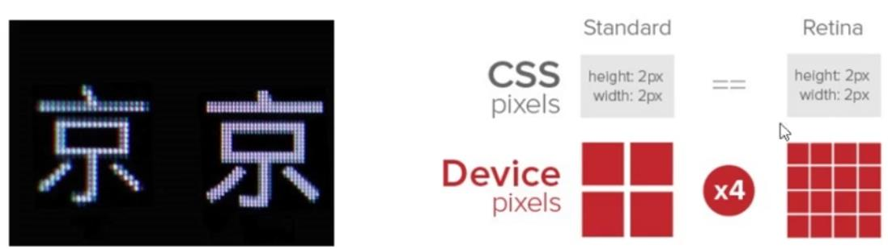
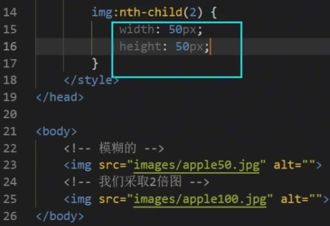

国内的 UC 和 QQ,百度等手机浏览器都是根据 Webkit 修改过来的内核,国内尚无自主研发的内核,就像国内的手机操作系统都是基于 Android 修改开发的一样。
总结:兼容移动端主流浏览器,处理 Webkit内核浏览器即可。
常见移动端屏幕尺寸：https://material.io/devices/
视口
视口(viewport) 就是浏览器显示页面内容的屏幕区域。
视口可以分为：
布局视口 layout viewport
视觉视口 visual viewport
理想视口 ideal viewport
布局视口 layout viewport
一般移动设备的浏览器都默认设置了一个布局视口,用于解决早期的PC端页面在手机上显示的问题。
iOS, Android基本都将这个视口分辨率设置为 980px,所以PC上的网页大多都能在手机上呈现,只不过元素看上去很小,一般默认可以通过手动缩放网页

视觉视囗 visual viewport
字面意思,它是用户正在看到的网站的区域。注意:是网站的区域。
我们可以通过缩放去操作视觉视口,但不会影响布局视口,布局视口仍保持原来的宽度

理想视囗 ideal viewport
为了使网站在移动端有最理想的浏览和阅读宽度而设定
理想视口,对设备来讲,是最理想的视口尺寸
需要手动添写meta视口标签通知浏览器操作
meta视口标签的主要目的:布局视口的宽度应该与理想视口的宽度一致,简单理解就是设备有多宽,我们布局的视口就多宽
meta 视口标签
标准的 viewport 设置
<meta name="viewport" content="width=device-width, user-scalable=no,initial-scale=1.0, maximum-scale=1.0, minimum-scale=1.0">
| 属性 |
解释说明 |
补充说明 |
| width |
宽度设置的是 viewport 宽度，可以设置 device-width 特殊值 |
device-width 就是设备宽度 |
| user-scalable |
用户是否可以缩放，yes 或 no(1 或 0) |
即：是否允许用户缩放 |
| initial-scale |
初始缩放比，大于 0 的数字 |
1 就是原大小，2 就是双倍大小 |
| maximum-scale |
最大缩放比，大于 0 的数字 |
2个值都设为1，表示不能缩放 |
| minimum-scale |
最小缩放比，大于 0 的数字 |
物理像素 & 物理像素比
物理像素点(即 分辨率)指的是屏幕显示的最小颗粒,是物理真实存在的。这是厂商在出厂时就设置好了,比如苹果6\7\8是 750*1334
我们开发时候的 1px 不是一定等于 1个物理像素的
PC 端页面,1个px等于1个物理像素的,但是移动端就不尽相同
一个 px 的能显示的物理像素点的个数,称为物理像素比或屏幕像素比
1. 物理像素 就是我们说的分辨率 iPhone8 的物理像素是 750
2. 在 iPhone8 里面 1px 开发像素 = 2个物理像素
每个品牌型号的设备物理像素比不一致

PC 端和早前的手机屏幕/普通手机屏幕:1CSS像素 = 1物理像素的
Retina(视网膜屏幕)是一种显示技术,可以将把更多的物理像素点压缩至一块屏幕里,从而达到更高的分辨率,并提高屏幕显示的细腻程度

多倍图
对于一张 50px*50px 的图片，在手机 Retina 屏中打开,按照刚才的物理像素比会放大倍数,这样会造成图片模糊
在标准的 viewport设置中,使用倍图来提高图片质量,解决在高清设备中的模糊问题
通常使用二倍图,因为 iPhone6\7\8 的影响，但是现在还存在3倍图4倍图的情况,这个看实际开发公司需求
背景图片注意缩放问题
处理方式：
我们需要一个 50*50 像素(css 像素)的图片，直接放到我们的 iphone8 里面会放大2倍 100*100 就会模糊
我们采取的是：放一个 100*100 图片，然后手动的把这个图片缩小为 50*50 (css 像素)
我们准备的图片 比我们实际需要的大小，大2倍，这就是 2倍图
